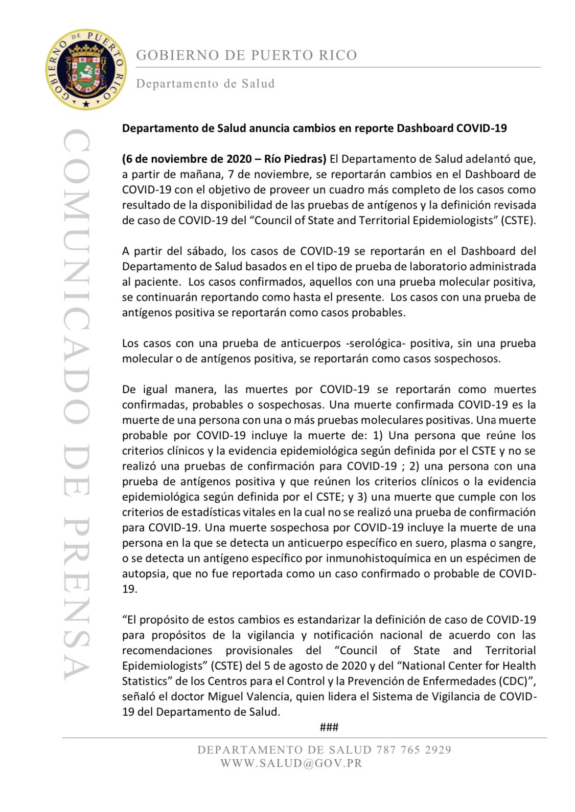

[PR] Puerto Rico to redefine "probable" cases to mean antigen testing
Issue number 936
sacundim opened this issue on November 6, 2020 at 6:53 pm
Labels Data quality stale
State or US: Puerto Rico
Puerto Rico’s Department of Health announced today that it’s going to revise its COVID-19 dashboard to adopt the case classification in the Council of State and Territorial Epidemiologists’ Coronavirus Disease 2019 (COVID-19) 2020 Interim Case Definition, Approved August 5, 2020, so that:
- Confirmed case: Positive PCR test
- Probable case: Positive antigen test
- Suspect case: Positive antibody test
Previous to this, the “probable case” category was (mis)used to cover cases that generally all they had was a positive antibody test. These cases will now be reclassified as “suspect,” which means that the number of cases labeled as “probable” will soon drop from the current 33,615 to something in the neighborhood of 160 (my estimate using PRDoH testing API data).
Sources:
- Journalist’s Twitter thread with press release
- Puerto Rico Department of Health press release (attached below)

Comments
This issue has been automatically marked as stale because it has not had recent activity. It will be closed if no further activity occurs. Thank you for your contributions!
This issue has been closed because it was stale for 15 days, and there was no further activity on it for 10 days. You can feel free to re-open it if the issue is important, and label it as “not stale.”
Thank you so much @sacundim for letting us know!